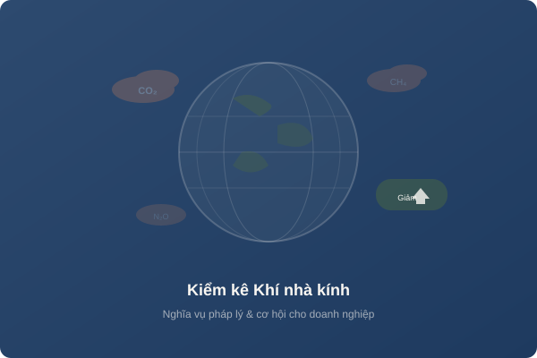

Kiểm kê khí nhà kính: Nghĩa vụ pháp lý và cơ hội cho doanh nghiệp Việt Nam
Biến đổi khí hậu đang là thách thức toàn cầu, và Việt Nam đã cam kết đạt phát thải ròng bằng 0 (Net Zero) vào năm 2050 tại COP26. Kiểm kê khí nhà kính (KNK) không chỉ là nghĩa vụ pháp lý mà còn mở ra cơ hội kinh doanh mới từ thị trường tín chỉ carbon.
1. Khí nhà kính là gì?
Khí nhà kính (Greenhouse Gases - GHG) là các loại khí trong khí quyển có khả năng hấp thụ và phát xạ bức xạ hồng ngoại, gây hiệu ứng nhà kính. Các loại KNK chính bao gồm:
Carbon dioxide
GWP = 1
Methane
GWP = 28
Nitrous oxide
GWP = 265
Hydrofluorocarbons
GWP rất cao
GWP (Global Warming Potential): Tiềm năng nóng lên toàn cầu so với CO₂ trong 100 năm.
2. Nghị định 06/2022/NĐ-CP
Nghị định 06/2022/NĐ-CP quy định về giảm nhẹ phát thải KNK và bảo vệ tầng ozone, là văn bản pháp lý quan trọng nhất hiện nay về lĩnh vực này tại Việt Nam. Nội dung chính bao gồm:
- Danh mục các cơ sở phải kiểm kê KNK (1.912 cơ sở)
- Yêu cầu về đo đạc, báo cáo, thẩm định (MRV)
- Lộ trình phát triển thị trường carbon trong nước
- Cơ chế trao đổi, bù trừ tín chỉ carbon
3. Đối tượng phải kiểm kê KNK
Theo Quyết định 01/2022/QĐ-TTg, các cơ sở phải kiểm kê KNK thuộc các lĩnh vực:
Năng lượng: Nhà máy nhiệt điện, lọc hóa dầu, khai thác than (phát thải > 3.000 tấn CO₂e/năm)
Giao thông vận tải: Hãng hàng không, doanh nghiệp vận tải lớn
Xây dựng: Tòa nhà thương mại > 1.000 tấn CO₂e/năm
Công nghiệp: Sản xuất thép, xi măng, hóa chất, giấy, dệt nhuộm
Nông nghiệp: Chăn nuôi quy mô lớn, trồng lúa nước
Chất thải: Bãi chôn lấp, nhà máy xử lý chất thải
4. Lộ trình thực hiện (2024-2026)
| Mốc thời gian | Nội dung |
|---|---|
| 2024 | Hoàn thành kiểm kê KNK lần đầu cho các cơ sở thuộc danh mục |
| 2025 | Xây dựng kế hoạch giảm nhẹ phát thải KNK cấp cơ sở |
| 2025-2027 | Vận hành thí điểm sàn giao dịch tín chỉ carbon |
| 2028 | Vận hành chính thức thị trường carbon trong nước |
5. Phương pháp kiểm kê (Scope 1, 2, 3)
Kiểm kê KNK được thực hiện theo tiêu chuẩn quốc tế ISO 14064 và GHG Protocol, chia thành 3 phạm vi:
Scope 1 - Phát thải trực tiếp
Phát thải từ nguồn thuộc sở hữu hoặc kiểm soát của doanh nghiệp: đốt nhiên liệu, quá trình sản xuất, rò rỉ gas lạnh, phương tiện vận tải nội bộ.
Scope 2 - Phát thải gián tiếp từ năng lượng
Phát thải từ việc sử dụng điện, hơi nước, nhiệt, làm mát mua từ bên ngoài.
Scope 3 - Phát thải gián tiếp khác
Phát thải trong chuỗi giá trị: nguyên vật liệu đầu vào, vận chuyển, sử dụng sản phẩm, xử lý chất thải.
6. Thị trường carbon - Cơ hội kinh doanh
Thị trường carbon cho phép doanh nghiệp mua bán tín chỉ carbon. Doanh nghiệp giảm phát thải tốt hơn mức quy định có thể bán tín chỉ dư thừa cho doanh nghiệp khác, tạo ra nguồn thu mới.
- Giá tín chỉ carbon quốc tế: 5-100 USD/tấn CO₂e (tùy thị trường)
- Dự kiến thị trường VN: 3-10 USD/tấn CO₂e giai đoạn đầu
- Cơ chế: Trao đổi hạn ngạch phát thải + bù trừ tín chỉ carbon
7. Lợi ích khi chủ động kiểm kê KNK
- Tuân thủ pháp luật: Tránh bị xử phạt khi quy định bắt buộc có hiệu lực
- Tiết kiệm chi phí: Xác định nguồn phát thải lớn để tối ưu năng lượng
- Tham gia thị trường carbon: Bán tín chỉ carbon dư thừa
- Nâng cao thương hiệu: Đáp ứng tiêu chuẩn ESG, thu hút đầu tư
- Tiếp cận tài chính xanh: Điều kiện để vay vốn ưu đãi từ quỹ khí hậu
- Đáp ứng yêu cầu xuất khẩu: CBAM (EU) yêu cầu khai báo carbon cho hàng nhập khẩu
Cần hỗ trợ kiểm kê KNK?
NC Environment cung cấp dịch vụ kiểm kê KNK toàn diện theo ISO 14064, hỗ trợ doanh nghiệp đáp ứng yêu cầu pháp lý và tận dụng cơ hội từ thị trường carbon.
Hotline: 0975 873 866 | Email: letuantran@gmail.com
Nhận Tư Vấn Miễn Phí